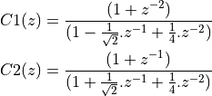

L5: IIR filters, and their implementation¶
The purpose of this lecture is as follows.
- To describe the direct-form I and direct-form II implementations of IIR designs
- To describe the cascade-form implementations of IIR designs
- To describe transpose-form implementations of IIR designs
- To describe parallel-form implementations of IIR designs
- To make two side notes: one on computing zeroes/poles of G(z), and another on the meaning of filter tap
Direct-form IIR implementation¶
An IIR filter is a digital filter described by the following input/output relationship
which means that the current output of an IIR filter is defined by both the previous inputs as well as the previous outputs.
We can write this equivalently as a z-transform
Assume that the order of the numerator and denominator are identical, then we can write the filter transfer function as follows.
Since these are N-th order polynomials in z, they contribute N zeroes and N poles. For an IIR system to be causal and stable, all poles must lie within the unit circle.
We can find the locations of the zeroes and poles of an arbitrary  by
multiplying the numerator and denominator by and finding the zeroes
of each polynomial.
by
multiplying the numerator and denominator by and finding the zeroes
of each polynomial.
Note
Example: Find the zeroes and poles of
Multiplying both equations by we find
By finding the roots of these equations (or by using a root-finding program), we can find the following zeroes:
as well as the following poles:
Finally, we can write G(z) in factored form as follows
This can then be written in regular z-transform format as

Direct-form I IIR Implementation¶
If we consider a transfer function of the form
and we look for the output signal  in response to the input signal , then we compute:
in response to the input signal , then we compute:

A direct-form I IIR implementation first computes the zeroes, and then the poles:
In the time domain we would implement
This formulation leads to a design as shown below. This design requires
 multiplications per output sample,
additions per output sample,
and delays.
multiplications per output sample,
additions per output sample,
and delays.
Direct-form II IIR Implementation¶
A direct-form II IIR implementation first computes the poles, and then the zeroes:
This structure is created by swapping the order of the operations in a direct-form I structure. However, an important optimization is possible because the taps can be shared by the feedback part as well as by the feedforward part.
This design requires multiplications per output sample,
additions per output sample,
and delays.
This implementation has the mimimum number of delays possible for a given transfer function. Hence, an N-th order FIR, and an N-th order IIR, both can be implemented with only N delays.
Cascade IIR Implementation¶
Just as with the FIR implementation, a cascade IIR is created by factoring the
nominator and denominator polynomials in . Assuming both
nominator and denominator have order N, then
It’s common to formulate this as second-order sections, in order to ensure that complex (conjugate) poles and complex (conjugate) zeroes can be represented with real coefficients. Each such a section contains a conjugate pole pair and/or conjugate zero pair.
Cascade IIR Example¶
We implement the following cascade IIR design in C. It has four poles, located at , as well as three zeroes, located at .
The first step is to derive the proper filter coefficients. We group the poles and zeroes as follows.
Which can be multiplied out to derive the filter coefficients:

The construction of the filter proceeds similar to the cascade FIR filter from lecture 4. First, we create a data structure for the cascade IIR stage, containing filter coefficients and filter state. We will use a direct-form Type II design, which gives us a state of only two variables.
1 typedef struct cascadestate { 2 float32_t s[2]; // state 3 float32_t b[3]; // nominator coeff b0 b1 b2 4 float32_t a[2]; // denominator coeff a1 a2 5 } cascadestate_t; 6 7 float32_t cascadeiir(float32_t x, cascadestate_t *p) { 8 float32_t v = x - (p->s[0] * p->a[0]) - (p->s[1] * p->a[1]); 9 float32_t y = (v * p->b[0]) + (p->s[0] * p->b[1]) + (p->s[1] * p->b[2]); 10 p->s[1] = p->s[0]; 11 p->s[0] = v; 12 return y; 13 } 14 15 void createcascade(float32_t b0, 16 float32_t b1, 17 float32_t b2, 18 float32_t a1, 19 float32_t a2, 20 cascadestate_t *p) { 21 p->b[0] = b0; 22 p->b[1] = b1; 23 p->b[2] = b2; 24 p->a[0] = a1; 25 p->a[1] = a2; 26 p->s[0] = p->s[1] = 0.0f; 27 }
The cascadestate_t now contains both feed-forward and feed-back coefficients.
The cascadeiir function is likely the most complicated element
for this design. The order of evaluation of each expression is chosen
so that we don’t update filter state until it has been used for all expressions
required. In cascadeiir we first compute the intermediate variable v which
corresponds to the center-tap of the filter. Next, we compute the
feed-forward part based in this intermediate v. Finally, we update the filter
state and return the filter output y.
The filter program then consists of filter initialization, followed by the chaining of filter cascades:
1 cascadestate_t stage1; 2 cascadestate_t stage2; 3 4 void initcascade() { 5 createcascade( /* b0 */ 1.0f, 6 /* b1 */ 0.0f, 7 /* b2 */ 1.0f, 8 /* a1 */ -0.7071f, 9 /* a2 */ 0.25f, 10 &stage1); 11 createcascade( /* b0 */ 1.0f, 12 /* b1 */ 1.0f, 13 /* b2 */ 0.0f, 14 /* a1 */ +0.7071f, 15 /* a2 */ 0.25f, 16 &stage2); 17 } 18 19 uint16_t processCascade(uint16_t x) { 20 21 float32_t input = adc14_to_f32(0x1800 + rand() % 0x1000); 22 float32_t v; 23 24 v = cascadeiir(input, &stage1); 25 v = cascadeiir(v, &stage2); 26 27 return f32_to_dac14(v*0.125); 28 }
Note
The meaning of a delay or a tap
A central concept in DSP is the implementation of the  operation, we defined as
a delay (of a single sample). Implementing a delay in C is tricky, because the C programming
language goes not support the concept of time. Yet, by a precise interpretation of what
it means to ‘delay a sample’, we can find an unambiguous technique to implement it in C code.
operation, we defined as
a delay (of a single sample). Implementing a delay in C is tricky, because the C programming
language goes not support the concept of time. Yet, by a precise interpretation of what
it means to ‘delay a sample’, we can find an unambiguous technique to implement it in C code.
The following figure shows three different transfer functions: a direct connection, a single
delay, and a double delay. We already know how to write each transfer function using the z-transform, as well as using a graphical notation. We have used black boxes to indicate
the implementation of .
To understand the implementation of this design, shown in the ‘time loop’ at the bottom, you have to keep in mind that is not just a single value. Rather, it is a stream of samples, with potentially infinitely many samples each spaced one sample delay apart. Hence, writing means more than saying ‘the output equals the input’. Instead, it means: ‘each output sample equals each input sample’. There is an implicit time loop around this expression, that executes the copy from input to output over and over again, for each new input sample. If we write this time loop as a C function, we would write:
uint16_t processSample(uint16_t x) {
return x;
}
Next, consider which means: copy the input to the output, delayed by one sample. Again, this delay does not only apply to the current sample. Instead, it applies to every sample in . That’s why we need to introduce a memory which can remember a sample for one sample delay. The implementation really does two things. First, it reads the output of the memory and copies that to the y output. Next, it reads an input sample x and stores that into the (now empty) memory. If we write this time loop as a C function, we would write the following.
uint16_t storage;
uint16_t processSample(uint16_t x) {
uint16_t y = storage;
storage = x;
return y;
}
Note the particular order of statements. We need to read the contents of the storage before overwriting it. This is a side effect of the sequential semantics of C.
Now, consider which means: copy the input to the output, delayed by two samples. In this case, we need two storage locations, one for each sample delay. The implementation of does three things: read the output of the second memory, copy the output of first memory to the second memory, copy the input to the first memory. If we write this time loop as a C function, we would write the following.
uint16_t storage1;
uint16_t storage2;
uint16_t processSample(uint16_t x) {
uint16_t y = storage2;
storage2 = storage1
storage1 = x;
return y;
}
Again, not the particular order of statements, where memory locations are read (emptied) before they are filled up again.
It’s not clear how you would write an arbitrary function build out of z delays. For example, let’s say that . Graphically, this function looks as follows.
The delay line functions as before, each time storing a sample for the duration of a sample period, before a new sample arrives. The output signal y is computed by combining delayed versions of x. The output signal y depends on the current x, the previous x, and the x before that. As a C function it would be implemented as follows.
uint16_t storage1;
uint16_t storage2;
uint16_t processSample(uint16_t x) {
uint16_t y = storage2 * 4 + storage1 * 2 + x;
storage2 = storage1;
storage1 = x;
return y;
}
This principle of building delay lines that are updated by a stream of samples applies equally
to FIR and IIR filters. A key lesson to remember is that such a memory element ()
cannot be optimized away, ever. You have to implement it as a storage element and it has to operate by storing samples for one sample period. Without a proper implementation of the storage
elements, it’s impossible to implement a z-transfer function correctly.
Transposed Structures¶
The transposition theorem says that the input-output properties of a network remain unchanged after the following sequence of transformations:
- Reverse the direction of all branches
- Change branch points into summing nodes and summing nodes into branch points
- Interchange the input and output
Once you have the defined the transposed-form structure, you can develop a C program for that implementation. The transposed-form IIR can be implemented using the same data structure as the direct-form IIR; only the filter operation would be rewritten. The following is the implementation of a second-order section of a transposed direct-form II design.
1 typedef struct cascadestate { 2 float32_t s[2]; // state 3 float32_t b[3]; // nominator coeff b0 b1 b2 4 float32_t a[2]; // denominator coeff a1 a2 5 } cascadestate_t; 6 7 float32_t cascadeiir_transpose(float32_t x, cascadestate_t *p) { 8 float32_t y = (x * p->b[0]) + p->s[0]; 9 p->s[0] = (x * p->b[0]) - (y * p->a[0]) + p->s[1]; 10 p->s[1] = (x * p->b[1]) - (y * p->a[1]); 11 return y; 12 }
Parallel Structures¶
IIR filters are rarely implemented as single, monolithic structures; the risk for instability is too high (cfr Lecture 6). Instead, IIRs are implmemented as second-order sections.
We already discussed cascade-form implementation for IIRs. An alternate implementation is the parallel-form implementation. The idea of a parallel-from implementation is to build two or more parallel filters, that can be summed up together to form the overall transfer function.

Let’s consider this for the pole plot shown in the figure. This design has two poles, so it’s transfer function would be:
To build a parallel design, we have to decompose
The design of these partial function proceeds by partial fraction expansion.
We split the poles of the overall function in two.
In this case, one pole goes with and the other pole goes with
. Partial fraction expansion will now proceed by looking for terms
A and B such that:

Of course we can compute the partial fraction expansion by hand (by manually computing A and B),
but it’s also possible to do this using Matlab, by using the residue function.
>> % compute G(z)
>> a = conv([1 0.25],[1 -0.5])
a =
1.0000 -0.2500 -0.1250
% In other words, G(z) = z^-2 / (1 - 0.25.z^-1 - 0.125.z^-2)
>> % compute terms A and B
>> [r,k,p] = residue([0 0 1],a)
r =
1.3333
-1.3333
k =
0.5000
-0.2500
p =
[]
From the r term in the Matlab output, we conclude that
In other words, rather than having these two filters compute in sequence, they can work as independent first-order systems. The overall filter output is found by adding each filter together.
Conclusions¶
We discussed the following filter implementation techniques:
- Direct Form I filters
- Direct Form II filters
- Transposed Direct Form II filters
We also discussed two decomposition techniques:
- Cascade-form decomposition
- Parallel-form decomposition